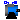
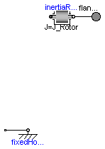
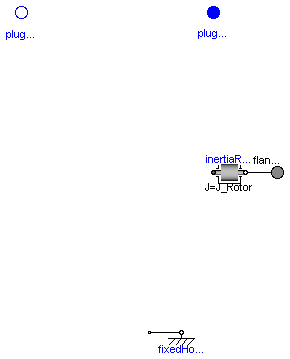
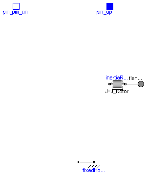

Modelica.Electrical.Machines.Interfaces.PartialBasicInductionMachine
Modelica.Electrical.Machines.Interfaces.PartialBasicInductionMachine
This package contains the space phasor connector and partial models for machine models.
| Name | Description |
|---|---|
| SpacePhasor | Connector for Space Phasors |
| PartialBasicMachine | Partial machine model |
|  PartialBasicInductionMachine | Partial model for induction machine |
| PartialBasicDCMachine | Partial model for DC machine |
Connector for Space Phasors:
| Type | Name | Description |
|---|---|---|
| v_[2] | [V] | |
| flow | i_[2] | [A] |
connector SpacePhasor "Connector for Space Phasors" Modelica.SIunits.Voltage v_[2]; flow Modelica.SIunits.Current i_[2]; end SpacePhasor;

Base partial model DC machines:
The machine's stator is implicitely fixed.
| Type | Name | Default | Description |
|---|---|---|---|
| J_Rotor | rotor's moment of inertia [kg.m2] |
| Type | Name | Description |
|---|---|---|
| flange_a |
partial model PartialBasicMachine "Partial machine model"
parameter Modelica.SIunits.Inertia J_Rotor "rotor's moment of inertia";
output Modelica.SIunits.Angle phi_mechanical = flange_a.phi
"mechanical angle of rotor against stator";
output Modelica.SIunits.AngularVelocity w_mechanical = der(phi_mechanical)
"mechanical angular velocity of rotor against stator";
output Modelica.SIunits.Conversions.NonSIunits.AngularVelocity_rpm
rpm_mechanical = Modelica.SIunits.Conversions.to_rpm(w_mechanical)
"mechanical speed of rotor against stator [rpm]";
output Modelica.SIunits.Torque tau_electrical = inertiaRotor.flange_a.tau
"electromagnetic torque";
output Modelica.SIunits.Torque tau_shaft = -flange_a.tau "shaft torque";
Modelica.Mechanics.Rotational.Interfaces.Flange_a flange_a;
Modelica.Mechanics.Rotational.Inertia inertiaRotor(final J=J_Rotor);
Modelica.Mechanics.Rotational.Fixed fixedHousing(final phi0=0);
protected
Modelica.Mechanics.Rotational.Interfaces.Flange_b internalSupport;
equation
connect(inertiaRotor.flange_b, flange_a);
connect(internalSupport, fixedHousing.flange_b);
end PartialBasicMachine;
Modelica.Electrical.Machines.Interfaces.PartialBasicInductionMachine
Partial model for induction machine models, containing:
| Type | Name | Default | Description |
|---|---|---|---|
| J_Rotor | rotor's moment of inertia [kg.m2] | ||
| p | 2 | number of pole pairs (Integer) |
| Type | Name | Description |
|---|---|---|
| flange_a | ||
| plug_sp | ||
| plug_sn |
partial model PartialBasicInductionMachine
"Partial model for induction machine"
extends PartialBasicMachine(J_Rotor=0.29);
constant Real pi=Modelica.Constants.pi;
constant Integer m=3 "number of phases";
parameter Integer p(min=1)=2 "number of pole pairs (Integer)";
output Modelica.SIunits.Voltage vs[m] = plug_sp.pin.v - plug_sn.pin.v
"stator instantaneous voltages";
output Modelica.SIunits.Current is[m] = plug_sp.pin.i
"stator instantaneous currents";
Modelica.Electrical.MultiPhase.Interfaces.PositivePlug plug_sp(final m=m);
Modelica.Electrical.MultiPhase.Interfaces.NegativePlug plug_sn(final m=m);
end PartialBasicInductionMachine;

Partial model for DC machine models, containing:
| Type | Name | Default | Description |
|---|---|---|---|
| J_Rotor | rotor's moment of inertia [kg.m2] |
| Type | Name | Description |
|---|---|---|
| flange_a | ||
| pin_ap | ||
| pin_an |
partial model PartialBasicDCMachine "Partial model for DC machine" extends PartialBasicMachine(J_Rotor=0.15); output Modelica.SIunits.Voltage va = pin_ap.v-pin_an.v "armature voltage"; output Modelica.SIunits.Current ia = pin_ap.i "armature current"; Modelica.Electrical.Analog.Interfaces.PositivePin pin_ap; Modelica.Electrical.Analog.Interfaces.NegativePin pin_an; end PartialBasicDCMachine;